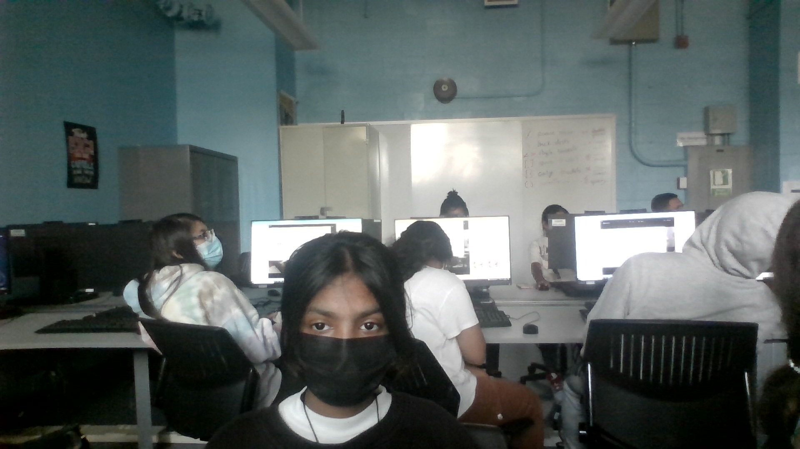

Thomas A. Edison CTE High School
Web Development
Lab 2
Inserting Images
09/19/2022
by Ashley (Maru) Puran

I am Maru, and I am a person that attends Thomas Edison High School. I don't have any major dislikes or likes (I like Mizuki Akiyama <3) but in my free time, I do things such as drawing, deciphering story games/ARGs as well as playing them, playing various fighting games, and indulging in things of the horror genre. I chose to study web development because I enjoy things relating to computers, and I also liked the prospect of web design itself, so I wanted to try it out; I'm excited to learn programming in this class, and build upon the amount of knowledge of web development I had beforehand. I'm excited to learn more about this class in general, as well as spend my time here for the next 3 years or so.